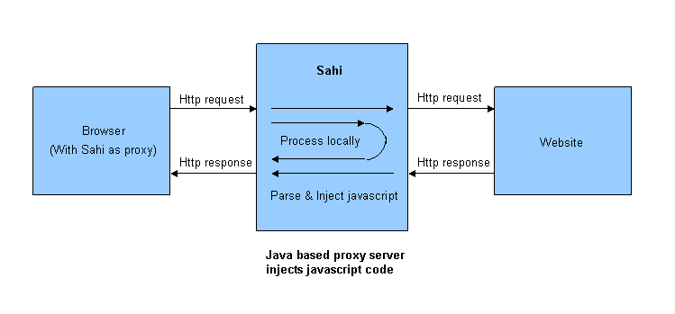

Sahi - Web Automation and Test Tool
Documentation in this directory is not current.
Please visit http://sahi.co.in/ for the latest documentation.
Technical Aspects
How does Sahi work?How does the script in sah files execute?
Why do variables need to be prefixed with a dollar($) sign?
Why do all Sahi APIs start with an underscore?
How does Sahi work?
Sahi's core parts include the Sahi proxy server and the javascript engine
Html responses which pass through the proxy are modified such that javascript is injected at the start and end of the response.
This will allow the browser to record and playback scripts and talk back to the proxy when needed.
Apart from handling requests for pages that the browser requests,
Sahi also handles custom commands related to recording, playback etc. which the browser sends.
How does the script in sah files execute?
The Sahi script, even though looking like javascript, is not executed as regular javascript on the browser.The reasons for this are:
- The script refers to objects spread over multiple pages and will result in errors if executed directly on any page
- The script needs to be executed step by step with a slight
delay between execution of each step.
This cannot be accomplished directly since javascript has no way of pausing execution.
Thus, a line which looked like this:
_click(_link("Link Test"));
gets translated to:
sahiAdd("sahi_click(sahi_link(\"Link Test\"));", "sahi_demo.sah : 3")
The method sahiAdd(cmd, debugInfo) takes two parameters.
The first is the line of script, which has been converted into a string.
The second is debug information which the proxy adds.
function sahiAdd(cmd, debugInfo){
var i = _sahiCmds.length;
_sahiCmds[i] = cmd;
_sahiCmdDebugInfo[i] = debugInfo;
}
During page load, Scheduler
Functions add steps in the script to an array.A counter is maintained on the server which marks the index in the array of the step that is to be run next.
This counter is updated with each successful execution of a step.
Why do variables need to be prefixed with a dollar($) sign?
When variables are used, the transformation of script is as follows:var $linkText = "Link Test"; _click(_link($linkText));
becomes
var $linkText = "Link Test";
sahiAdd("sahi_click(sahi_link("+s_v($linkText)+"));", "sahi_demo.sah : 4");
function s_v(v){
var type = typeof v;
if (type == "number") return v;
else if (type == "string") return "\""+v+"\"";
else return v;
}
Thus, what will eventually execute, will be:
sahi_click(sahi_link("Link Test"));
For easy identifcation of variables while parsing, it is needed that there is some way of tagging variables.
The dollar($) sign serves that purpose.
Why do all Sahi APIs start with an underscore?
Sahi scripts are loaded with each page that appears on the browser.Since it is all javascript, the API function names need to be unique.
If the application under test has a function with the same name, it can cause problems.
For this, all API functions start with "sahi_".
When Sahi's proxy serves the script to the browser, it parses and does a lot of modifications to the script.
One of these is to correctly replace the API methods starting with "_" with "sahi_".
Thus,
_click(_link("Create Login"));
actually becomes
sahi_click(sahi_link("Create Login"));
Starting the APIs with "_" helps in easy substitution with "sahi_" with less scope for ambiguity.